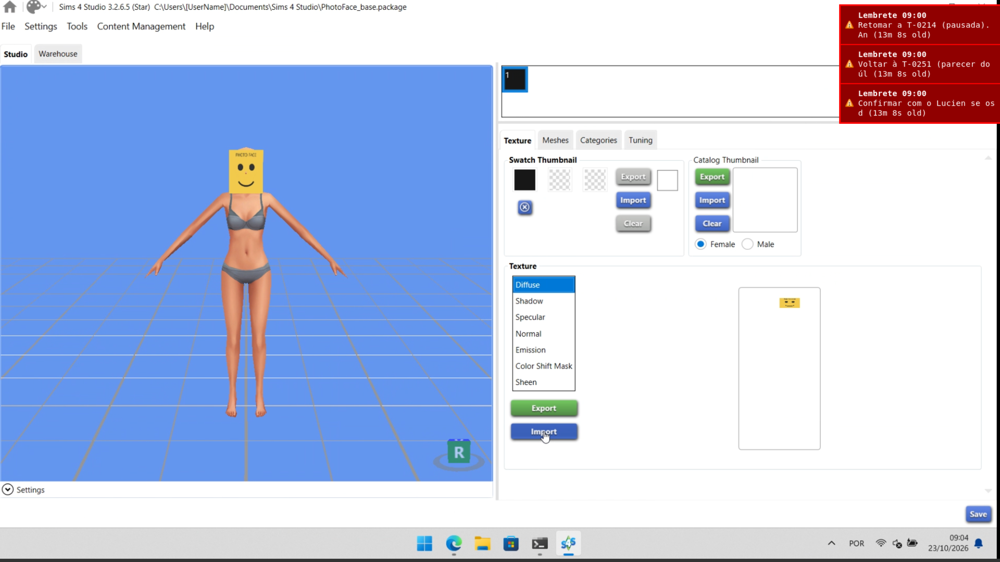

Compilação
Como buildar o mod inteiramente no Linux. Nenhum artefato deste projeto é um binário nativo de Windows — "cross-compilar" aqui significa garantir bytecode Python compatível com a versão embutida no jogo e paths corretos, não gerar um .exe.
.ts4script é um ZIP
com Python (cross-platform por natureza) e a companion tool roda em Node.js (também cross-platform). O
único ponto de atenção real é a versão do bytecode — ver seção
abaixo.
Pré-requisitos
Python para o script mod
O jogo embute CPython 3.7.0 (ver Base de Conhecimento). Para gerar bytecode compatível é preciso ter um interpretador 3.7.x disponível no ambiente de build — não necessariamente como Python "default" do sistema:
# via pyenv (recomendado — não interfere no Python do sistema)
curl https://pyenv.run | bash
pyenv install 3.7.17
pyenv local 3.7.17 # dentro da raiz do repo, ou de src/photo_face_mod/
# alternativa: imagem Docker oficial
docker run --rm -v "$PWD:/work" -w /work python:3.7 python3 --version
Para desenvolvimento, testes e ferramentas auxiliares que não rodam dentro do jogo (ex.: pytest,
linters), um Python mais moderno (3.11+) é aceitável e mais confortável — só o passo final de geração do
.pyc embarcado no .ts4script precisa do interpretador 3.7.
Node.js para a companion tool
# Node 18 LTS ou superior (requisito do Sims4Toolkit / S4TK)
nvm install 18
nvm use 18
node --version
cd companion/
npm installA questão do bytecode CPython 3.7
O módulo padrão compileall/py_compile do Python só compila bytecode para a
versão do próprio interpretador em execução — não existe flag nativa de "compilar para outra
versão" a partir de um Python mais novo. Isso significa que, para produzir .pyc com o magic
number correto, o passo de compilação do build precisa efetivamente rodar sob um interpretador
3.7.x (via pyenv ou container Docker python:3.7), e não apenas "mirar" essa versão a
partir de um Python mais novo.
# dentro do ambiente 3.7 (pyenv shell 3.7.17, ou dentro do container python:3.7):
python3 -m compileall -b src/photo_face_mod/
# gera os .pyc ao lado dos .py (flag -b = legacy naming, sem sufixo de versão no nome).pyc com magic number incompatível. O jogo carrega o mod sem erro aparente na hora
de ativar, mas falha ao tentar de fato executar o código — o sintoma típico é a tela de
"Last Exception" ao entrar em uma partida.
Build completo
O build junta duas saídas independentes: o .ts4script (script mod) e o .package
(CC/CASP), a partir das pastas src/photo_face_mod/, companion/ e
packages/casp_template/. Os passos, em ordem:
- Compilar os módulos do script mod para bytecode 3.7 (seção anterior).
- Zipar os
.pycresultantes com a extensão.ts4script(é um ZIP comum, sem compressão extra necessária além da padrão do próprio zip). - Rodar a companion tool para produzir um
.packagede exemplo/placeholder (útil para testes de integridade — o.package"de verdade" de cada jogador é gerado sob demanda a partir da foto dele, ver Instalação).
# 1) .ts4script (usa build/build_ts4script.py — chama py_compile internamente,
# rode com um Python 3.7 real para bytecode compativel com o jogo)
python3.7 build/build_ts4script.py --output build/dist/photofacemod.ts4script
# ou, via Makefile:
make build-ts4script
# 2) companion tool: gerar o .package de um Sim a partir do template CASP
cd companion/
npm install
node src/index.js assign \
--photo ../example.png \
--photo-key fulano \
--manifest ../build/dist/photo_manifest.json \
--template ../packages/casp_template/base.package \
--output ../build/dist/photofacemod.package \
--sim-name "Fulano"
cd -
--photo-key aloca (ou reaproveita, se já existir) um swatch livre no
photo_manifest.json — é esse arquivo que o mod Python (PhotoManifest) lê em
runtime para resolver o comando photofacemod.assign <photo_key>. Rodar o comando de novo
para outro Sim/foto acrescenta ao mesmo --output em vez de sobrescrever (o arquivo já
existente vira a base, não o template puro), então um único .package acumula todos os Sims.
O template real é packages/casp_template/base.package (ver seção seguinte); os testes
automatizados também usam um template sintético gerado em memória
(companion/src/syntheticTemplate.js). Detalhes e exemplos completos em
companion/README.md.
O CASP template
O acessório CAS base (packages/casp_template/base.package) foi criado no
Sims4Studio, que é só GUI, num Windows com o jogo instalado. A malha plana sai de um
script do Blender (packages/casp_template/flat_quad.py) que roda sem interface sobre a malha
exportada de uns óculos. O passo a passo completo está em packages/casp_template/README.md.
A foto ocupa o retângulo x 512..768, y 128..256 do atlas de 1024 x 2048 que o jogo compõe para cada Sim (a região dos óculos); o resto da textura é transparente.
Esse passo é raro: só se repete se a "plaquinha" mudar. O fluxo do dia a dia (uma foto nova por Sim) nunca toca o Sims4Studio; passa só pela companion tool.

Notas de build cross-platform
- Case sensitivity: Linux é case-sensitive, Windows não. Nomes de arquivo/pasta dentro
do
.ts4script/.packagedevem usar a mesma caixa consistentemente para evitar surpresas quando o jogador testar no Windows. - Separadores de path: usar sempre
/nos scripts de build e dentro dos ZIPs — o formato ZIP em si já normaliza isso, mas scripts Python/Node que manipulam paths devem evitar montar strings de path na mão com\. - Line endings: não é relevante para
.pyc/binários, mas vale manter.gitattributes/config do editor consistente para os fontes.py/.ts.
Depois de buildar, veja Testes para validar os artefatos automaticamente antes de instalar no jogo, e Instalação para o passo final no Windows.